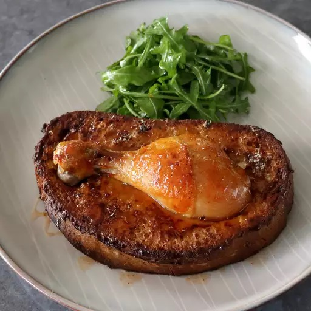

Chicken Leg Toast

Description
This flavorful, savory French toast may look strange, but so did chicken and waffles when it first came around! Delight your senses and fill up with this satisfying comforting dish.
Ingredients
- 2 chicken drumsticks
- ¼ cup diced carrot
- ¼ cup diced celery
- ¼ cup diced onion
- 2 cups chicken broth
- freshly ground black pepper to taste
- 1 teaspoon salt, or to taste
- 1 teaspoon fresh thyme leaves
- 1 teaspoon lemon zest
- cayenne pepper to taste
- ⅓ cup creme fraiche or heavy cream
- 2 large eggs
- 2 thick slices day old French bread (1 to 1 1/2 inch thick)
- 1 tablespoon butter for browning bread, plus a teaspoon for greasing pan
- 2 tablespoons grated Parmigiano-Reggiano cheese
For optional "Dragon Syrup"
- ¼ cup maple syrup
- 1 tablespoon Sriracha sauce
- ½ teaspoon cayenne pepper
Steps
- Combine chicken drumsticks, carrots, onions, celery, and broth in a saucepan. Bring to a simmer over high heat. Reduce heat to medium-low, cover, and simmer for 20 minutes. Turn drumsticks over, cover, and cook for another 20 minutes.
- Remove chicken and transfer to a plate. Allow to cool, wrap, and transfer into the refrigerator until needed.
- Turn heat to medium-high and reduce cooking liquids in the saucepan to about 1/3 cup. Strain liquid into a mixing bowl, pressing some of the cooked vegetables through the sieve. Season gravy with black pepper, salt, thyme leaves, lemon zest, and cayenne; add creme fraiche and eggs and whisk everything together until a smooth batter forms.
- Place bread in a shallow baking dish just large enough to fit the slices, and pour over the batter. Toss several times, wrap and place in the fridge for 1 hour or until almost all the batter is absorbed.
- Preheat the oven to 400 degrees F (200 degrees C). Line a baking sheet with foil and lightly grease with butter.
- Melt butter in a small skillet over medium heat and brown bread for a few minutes per side. Transfer bread onto the prepared baking sheet.
- Press one drumstick into the top of each slice of bread. Brush over any excess batter. Sprinkle with salt, dust with Parmesan cheese, and finish with a shake of cayenne.
- Bake in the preheated oven until nicely browned, 30 to 35 minutes.
- Mix together maple syrup, Sriracha hot sauce, and cayenne pepper in a little bowl ("dragon syrup").
- Serve chicken leg toast drizzled with dragon syrup.